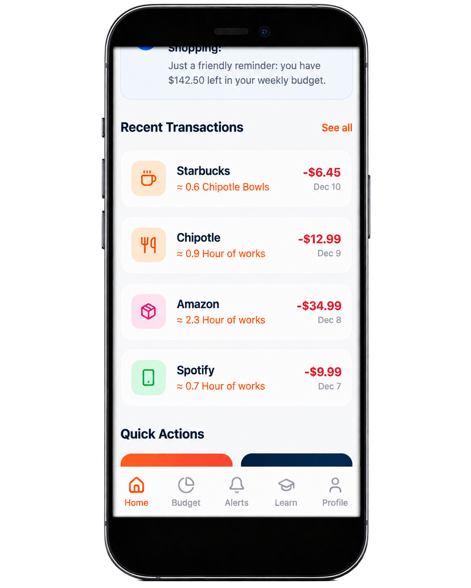
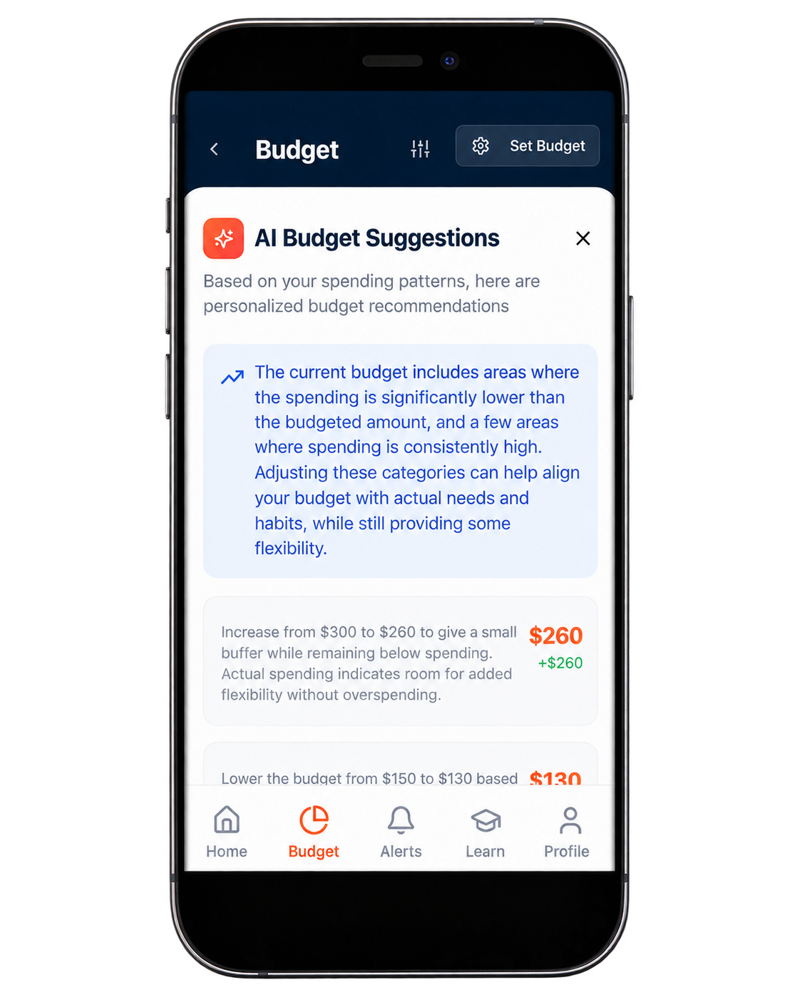
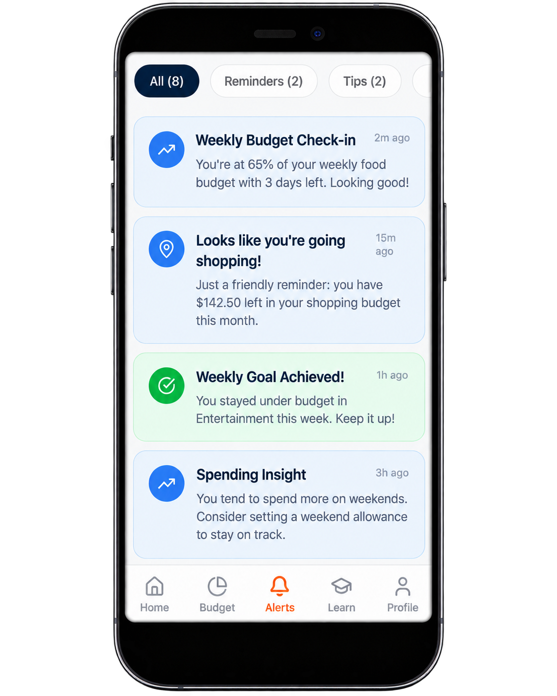
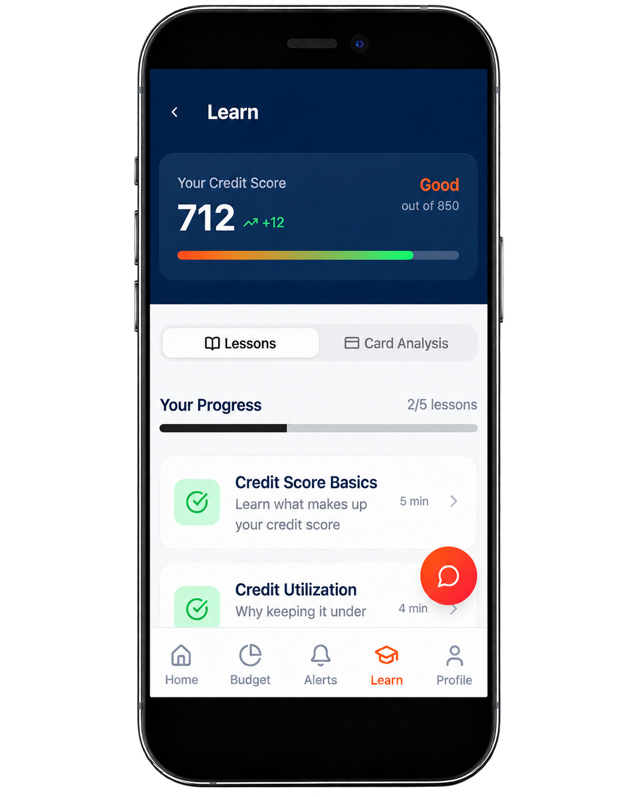

Contextual Spending Alerts
Surface a gentle reminder when a student is approaching a situation where they frequently overspend.
Pulse is a student-focused financial coaching concept developed as part of my Fall 2025 course, FinTech: Financial Innovation and Real-world Applications.
Our team explored why college students can fall into credit card debt even when budgeting and banking tools are readily available. We found an important gap: most financial apps tell users what they spent after the decision has already been made.
Pulse shifts the intervention earlier, providing contextual guidance at the moment of spending to help students better understand the consequences of a purchase before it becomes another line on a statement.
For students experiencing financial independence for the first time, digital payments can make spending feel abstract.
Our research highlighted several challenges:
The opportunity was to move financial guidance from “Here’s what you spent” to “Here’s what this decision means right now.”
Through interviews, observation, secondary research, and competitive analysis, we focused on the moments when students were most likely to overspend.
Students did not need more budgeting homework. They needed financial consequences to feel tangible at the moment of decision.
Translate spending into something personally meaningful.
For a student on a meal plan, a food-delivery purchase might be expressed in meal swipes already paid for.
For a student with a part-time job, a purchase might be translated into hours of work required to earn that money.
Deliver contextual nudges before or during high-risk spending moments.
Surface relevant financial education within the student's actual behavior instead of requiring them to seek it out separately.
Pulse is designed around several proactive features:
Surface a gentle reminder when a student is approaching a situation where they frequently overspend.
Convert abstract dollar amounts into personally relevant tradeoffs such as meal swipes or hours worked.
Highlight patterns such as repeated delivery purchases, micro-transactions, and subscriptions without overwhelming users with complex dashboards.
Tailor spending guidance, financial learning, and recommendations to the behaviors behind each student’s spending rather than giving every user the same generic advice.
Pulse adapts the framing of its guidance to the behavior behind the spending.
Recommend credit products based on how a student actually spends and repays rather than assuming ideal financial behavior.
Provide contextual education when it is most useful to the student.




Our competitive analysis showed that products such as Monarch, Quicken Simplifi, Origin, and Rocket Money largely focus on tracking and managing finances after transactions occur.
Pulse differentiates itself by focusing on behavior before and during the spending decision, with a product designed specifically around students' irregular income, early credit behavior, and limited financial experience.
We also considered the product from the financial institution's perspective: helping students develop healthier credit behavior could reduce risk while establishing stronger relationships with customers early in their financial lives.
We developed a student-finance product concept supported by:
The final concept reframed financial coaching from a retrospective budgeting tool into a real-time behavioral intervention designed around the moment a financial decision is made.
View Pitch Deck →